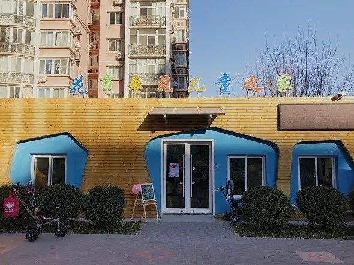
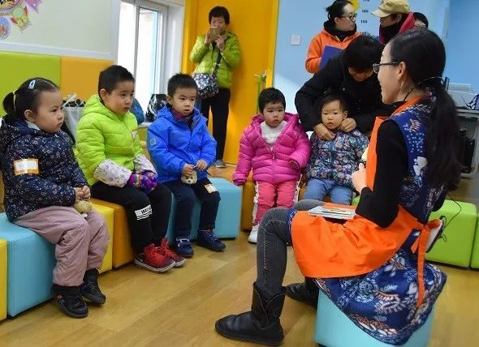
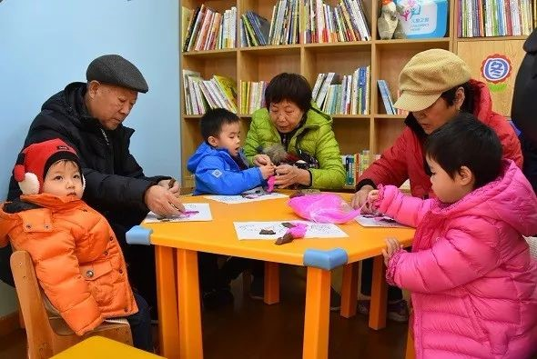
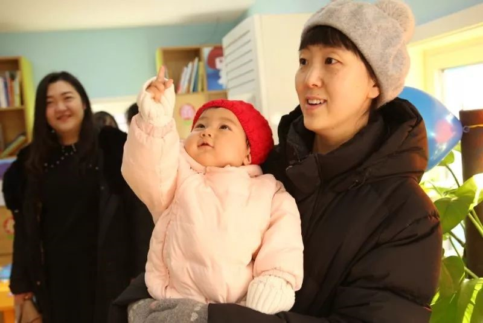

带娃来这里可以上早教~还有亲子阅读！
来源：北京东城
12月12日，东花市街道花市枣苑社区东门旁，一家由腾退空间改造的“儿童之家”正式对外开放。在这里，家长不仅能陪同孩子阅读，还能享受到专业的亲子家庭教育团队为社区儿童提供的专业课程。
图文社占用消防通道被整治
当天早上9点半，记者跟随陆陆续续到来的家长和孩子走进儿童之家。一进门，记者迎面看到70平方米的屋内五彩斑斓，天蓝色的墙壁上画着两棵发芽的小树，左侧一个长颈鹿图案的儿童身高测量尺引人注目，右侧一排米黄色书架上码放着千余册亲子读物。书架旁，两张橘黄色的六边形小桌旁摆着几把褐色小椅子。屋内中央，五颜六色的方块体围成一圈桌椅，专业老师正在为孩子们讲解绘本。
“其实这里原本是一家图文印刷社，因为占用了小区人防出口，并将小区东门隔壁的栅栏打开修建了一扇门，属于‘开墙打洞’，我们才对它进行了整治。”东花市街道党群工作办公室副主任赵晓萌介绍说。
据了解，为响应北京市“疏解整治促提升”专项行动的号召，将民防出口还归于民，2017年，东花市街道联合城管、消防等部门综合执法，封堵了小区东门边上的私开门，并将图文社重新规划设计，用作建设社区儿童之家。经过近一年的装修设计、配备配套设施，儿童之家正式对外开放。
启蒙教育课程需提前预约
目前，枣苑社区儿童之家尚处于试运营阶段，每周一闭馆，周二至周日从早10点到晚6点免费对社区居民开放，孩子们可在家长陪伴下来这里进行阅读。
除此之外，儿童之家还开展了丰富多彩的活动，如故事会、绘本之旅和美育课堂。赵晓萌表示，“现阶段，儿童之家主要为孩子们进行启蒙教育，每周8节课，时间大概1个小时，本社区2岁以上的儿童可在家长陪同下参加。因课程容纳有限，家长需提前在微信群里报名。根据情况，儿童之家的部分课程未来还会适当收费。”

据介绍，枣苑社区儿童之家由东花市街道妇联主办，并聘请专业化的亲子家庭教育团队悠贝成长科技有限公司承办。未来正式运营后，将从阅读、艺术、儿童素养等多方面入手，开设故事会、绘本之旅、儿童美术、音乐律动、儿童礼仪、英语阅读等多项课程，促进儿童身心发展，提升亲子关系，打造一个综合的“儿童素养实践基地”。